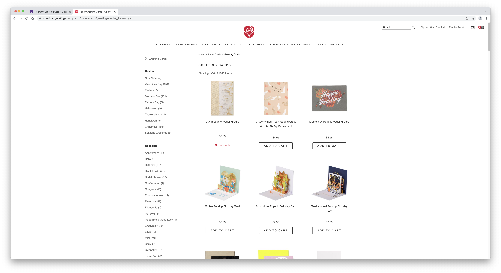
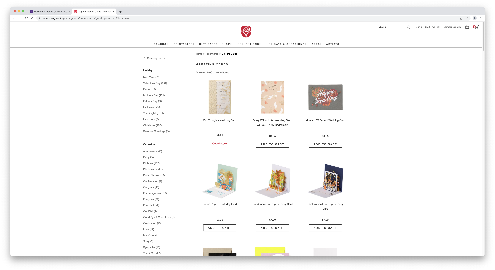

Final project proposal
Introduction
The Outpost
The Outpost is a greeting card company that helps foster meaningful connections between individuals through tangible, eye-catching artwork and relevant expressions. The Outpost offers both stock product and specialized services. Customers can browse and buy cards from numerous categories, or they can order customizable cards created from our professional design team.
Target audience
The target audience for The Outpost are individuals who still send out greeting cards to family and friends, and for those who value physically writing cards over digitally-created cards.
Their primary goal is to find a greeting card that matches the occassion that they are writing for, whether it be for a birthday, a wedding, or a thank you. They would visit this site because there are several options for their desired card, in addition to having the option to create their own custom card for specific events.
Comparative analysis
The Giving Ink

American Greetings

 

Papyrus


Website content
Greeting Cards
Find what you are looking for through our vast selection of greeting cards!
Birthdays
Happy Birthday to Me! Greeting Card
Give yourself a little treat from The Outpost! This cute card features a lopsided birthday cake and numerous candles, with gold foil, layered paper attachments, and silver glitter. Inside, cute message wishing a happy birthday leaves you lots of room for your own message
$7.95
Holidays
Painted Turkey Happy Thanksgiving Greeting Card
Celebrate the joy of Thanksgiving with this exquisite premium Thanksgiving card from The Outpost. The design features a painterly turkey that is embellished with sculpted embossing and accented with champagne, amber, and dark red gems. The celebratory inside message paired with this breathtaking design will give the lucky recipient reason to give thanks for you. Perfect for almost anyone in your life, family, friends, or coworkers. Wish them all the happiness of the season with this beautiful card.
$7.95
Graduation
Grad in Car Graduation Greeting Card
Congratulate the Grad with this fun card from The Outpost featuring a convertible with GRDU8 license plate and a grad cap blowing off in the wind. Unique Graduation card from Papyrus features a black tassel side tie, handmade details and shiny foils. This 5 x 7" design is finished with an insert sheet with greeting printed in black, and comes with a coordinating red envelope with black liner.
$7.95
Everyday
Dog with Glasses Blank Friendship Greeting Card
Share a super cute and trendy blank greeting card by the Outpost! Featuring adorable illustrated dogs with stylish eyewear, this fashion-forward blank card is embellished with shimmering foil in shades of green, blue, silver and red. The inside of the card is entirely blank so you can write a personal greeting. Coordinating envelope and a gold foil sticker complement the colorful card design. It makes the perfect thank-you card, congratulations card, thinking-of-you card and encouragement card!
$7.95
Anniversary
The Perfect Pair Greeting Card
It’s enchantment under the sea with this delightful Anniversary wish, only from The Outpost! The card features a delightful pair of polka-dotted pufferfish smooching, with heart-shaped bubbles and colorful sea grass, creating a design that’s both sweet and lighthearted! The art is handmade, with added embellishments like metallic foil, glitter, tip-ons, and silly googly eyes to add a unique textural feel to the design. The wish for the couple is complimentary, letting them know they’re perfect together!
$7.95
Congrats
Banner Congratulations Greeting Card
Celebrate special achievements and more with artfully designed congrats cards from The Outpost! This painterly card features hand-lettered pennant banners and colorful party garlands embellished with shimmering foil.
$7.95
Thank You
Tiny Arms Trex Funny Thank You Greeting Card
Give them the kind of thank you that they’ll always remember with this super fun thank you card exclusively from The Outpost. Featuring a really cute image of a t-rex on a bright green background and silly message on the outside, this premium quality thank you card is sure to make them smile. The inside is blank, so there is more than enough room to add your own little personal touch. Send it to a co-worker, friend, sister, grandparent, neighbor, or anyone else who deserves a thank you.
$7.95
Sympathy
Peaceful Reminders Sympathy Greeting Card
In times of loss, a kind word can make such a difference. Let them know you’re thinking of them with love and support with this beautiful Sympathy card from The Outpost. The design features a simple but elegant yellow floral design on the front, thoughtfully made by hand using vellum, glitter, and tip-ons. The wish inside is one of hope, warmth, and understanding, exactly the sort of message a person grieving needs to hear.
$7.95
Get Well
Sloth Get Well Soon Greeting Card
Send healing thoughts and a smile their way with a cute get-well card by The Outpost! This uniquely crafted card features an adorable sloth made from soft felt and fabric pieces, and a tropical tree embellished with sparkling glitter. A ‘get well soon’ greeting pops off the page in shiny foil letters.
$7.95
More
[Hand holding a black pen, writing a thank you letter inside a blank, white greeting card on top of a brown, wooden table.]
Customized Products
Want to create a customized piece for someone special in your life? Let our professional artists take up the task on creating your perfect greeting card.
- Size Options
- Color Options
- Design
- Text
[Pink greeting card with a unicorn running across a field, with its horn emmitting a rainbow that spells out "Happy Birthday Emily".]
Artists
Come meet the artists who are behind many of the artwork you see on our greeting cards and personalized product.
Brian V. Collins
Graduated at Cal Poly in 2018 with a Bachelor's in Fine Arts. He has traveled all over the world to apprentice under many notable artists, and to cultivate an artistic identity of his own. He has come back to San Luis Obispo to start his artistic journey as Design Director of The Outpost.
Hope Miller
Denise Bennett
Oscar Davis
[Brian Collins working on a rough sketch of roses for a new thank you card at his desk.]
About
We are a small, locally owned business that opened up shop in the sunny town on San Luis Obispo in April of 2020, shortly after graduating at the neighboring college of Cal Poly. Our time spent within the Graphic Communication department at Cal Poly cultivated a love for old-fashioned printing and tanigible product creation. Our love for connecting with our friends and family in meaningul ways have led us to creating the Outpost, a way for individuals to write meaningful messages that are tailored for the reciever.
[Group picture of some of the current employees of the business, such as the artists and store-workers. They are standing in front of the cahs register found in the center of the store, below the "The Outpost" sign hanging from the ceiling.]
Location
We are located in the central coast of California at
1312 Turquoise St. San Luis Obispo, CA 93405Stop by to see our remarkable greeting cards and say hi to our lovely arists!Store Hours
- Sunday - Closed
- Monday - 9:00 - 16:30
- Tuesday - 9:00 - 16:30
- Wednesday - 9:00 - 16:30
- Thursday - 12:00 - 20:00
- Friday - 9:00 - 16:30
- Saturday - 9:00 - 15:00
[The storefront of the Outpost store. Looking into the front window, several, colorful greeting cards can be seen on display.]